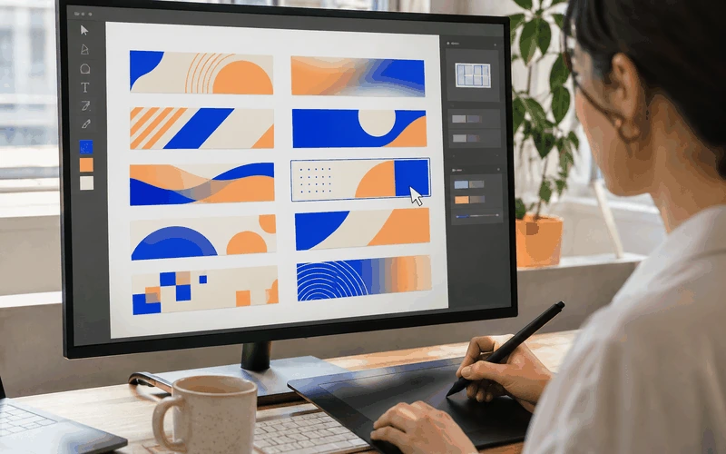
ラフ出しは
AIと10案
構成案・キャッチコピー・配色のたたき台をAIと一緒に量産。選ぶ・磨くことに時間を使えます。
未経験から、最短45日のカリキュラムで
ラフ出し・画像生成・コーディング補助をAIに任せ、
あなたは「伝わるデザイン」に集中する学び方。
クリエアイの3つの約束
※「最短45日」はカリキュラムの学習期間の目安であり、スキルの習得・就職・収入を保証するものではありません。
※本ページは架空のスクールです。セミナーの開催・お申し込みはできません。
なぜ45日で
現場で使うスキルだけを教えるから。
次の5つの指導は、クリエアイでは一切行いません。
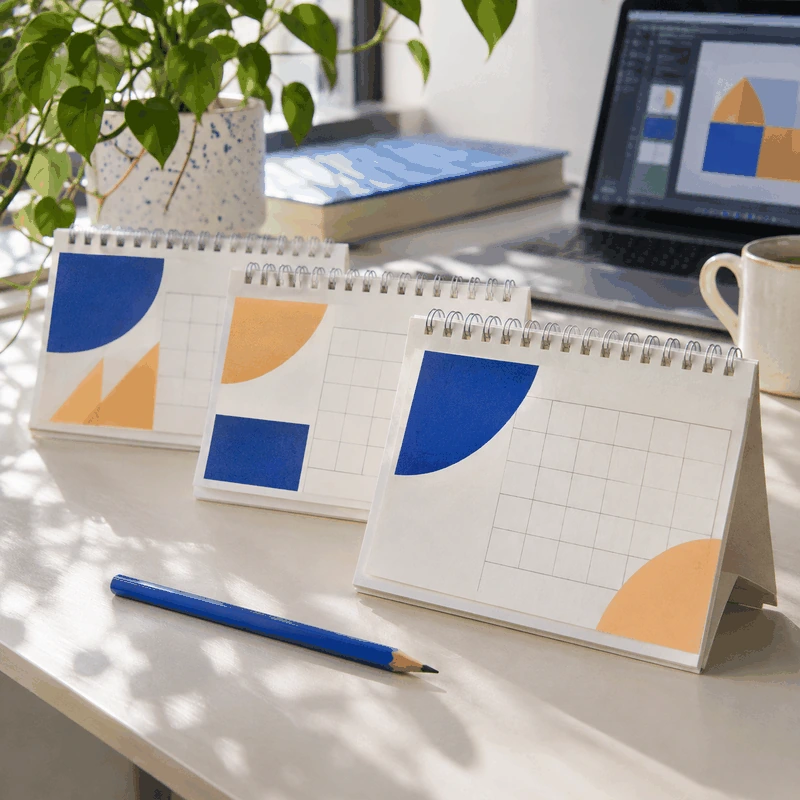
デザインの「時間のかかる部分」を

構成案・キャッチコピー・配色のたたき台をAIと一緒に量産。選ぶ・磨くことに時間を使えます。
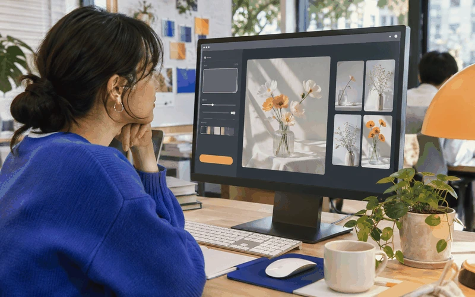
写真素材探しに半日かける代わりに、イメージ通りの素材を生成。権利面の注意点も学びます。
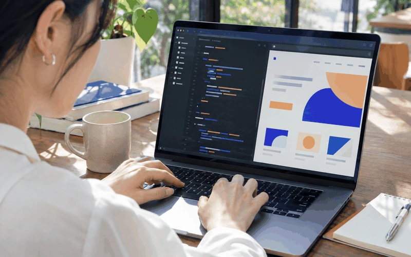
HTML/CSSはAIに書かせ、あなたは意図通りか「見て判断」する側へ。暗記より読める力を育てます。
即戦力とは、AIを使いこなしてスピードと質を両立できること。
わたしたちは、そんな"結果を出せる"卒業生を育てます。
仕事のイメージから、学び方を考える。
PRESENT
3つのセミナー参加特典
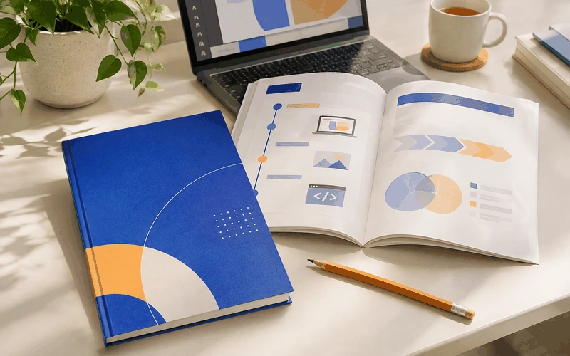
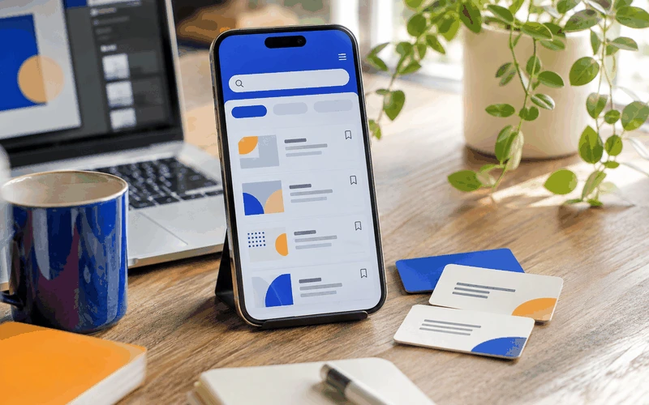
最短45日で
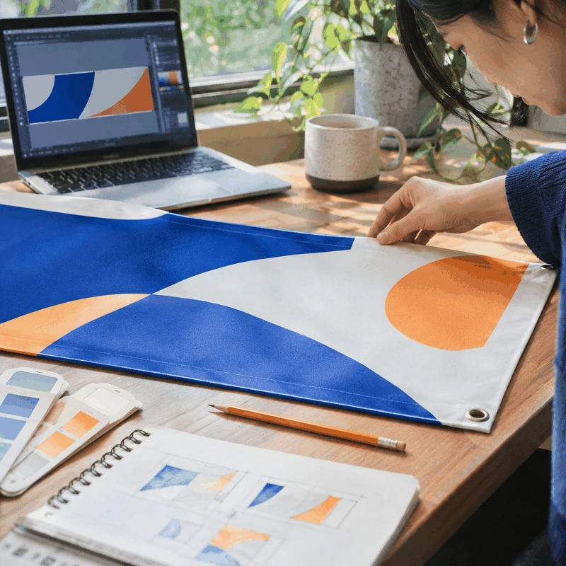
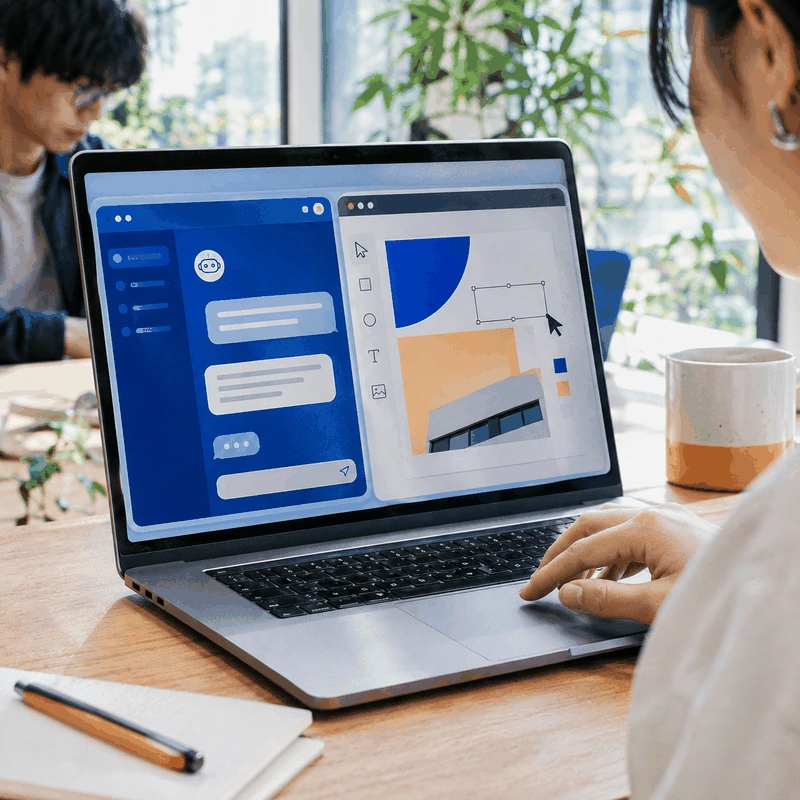
1つでも
当てはまる方は必見
場所を選ばず
自由に働きたい方
育児や家事と両立できる
仕事を探している方
AI時代に残るスキルを
身につけたい方
クリエイティブな仕事を
してみたい方
STEP
1本10分前後の動画で、その回の課題に必要な考え方とAIの使い方を学びます。
ラフ出しや素材生成をAIに任せ、自分の手で「伝わる」形に整えていきます。
提出した作品に、現役デザイナーが1人ひとり赤入れ。他の人の添削も見て学べます。
添削をもとに修正し、ポートフォリオに載せられる完成度まで引き上げます。
未経験からでもつまずかない
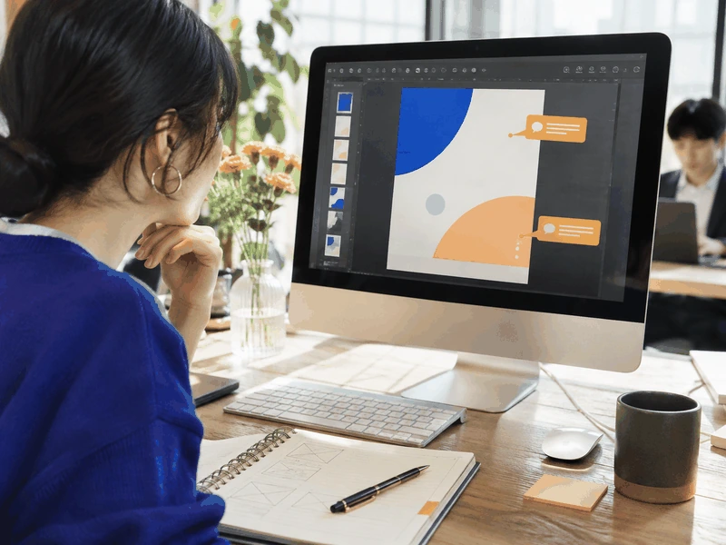
添削の回数に上限はありません。納得いくまで提出できます。
AIツールの使い方からデザインの迷いまで、原則24時間以内に返信。
同期5〜6名のチームで週1回オンライン交流。1人で抱え込みません。
副業・転職・フリーランス。目指す形に合わせて学び方を一緒に決めます。
卒業後も続く
卒業後も参加できるオンラインコミュニティ。最新AIツールの情報交換や勉強会を開催。
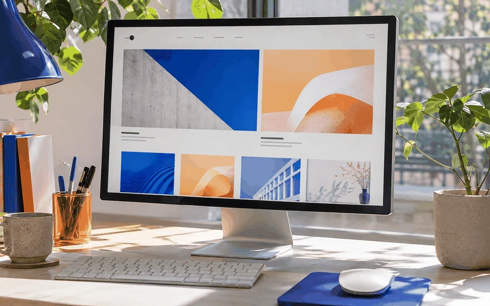
卒業制作を軸に、応募先・営業先に合わせたポートフォリオの見せ方を添削します。
提携先から届くバナー・LP制作などの小さな案件から、実務経験を積み始められます。
※案件の紹介・採用を保証するものではありません。
全10Lessonで学ぶ
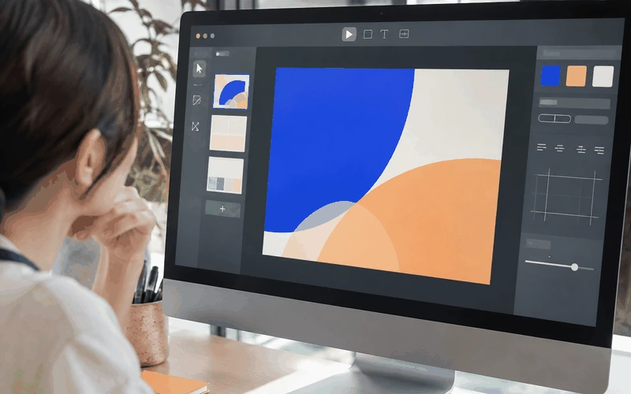
デザインツールの基本と、生成AI・コーディングAIのセットアップ。初日から「作れる」環境を整えます。
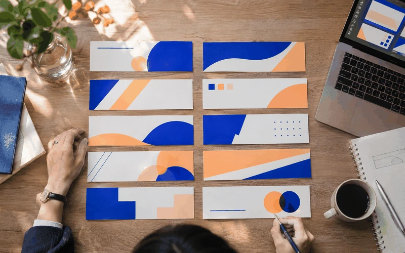
コピーと構成をAIと出し合い、1枚のバナーに仕上げる。「選ぶ目」を鍛える最初の課題です。
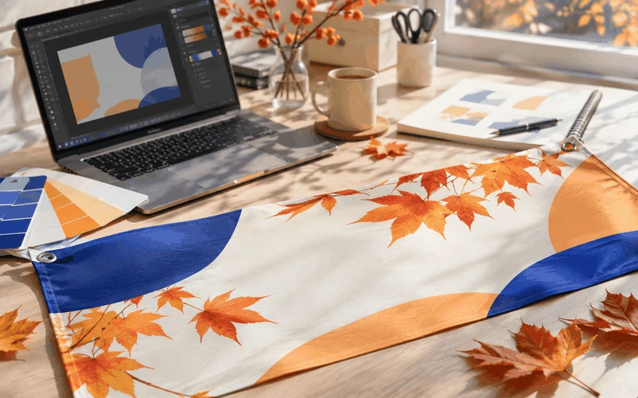
季節感・ターゲット別の配色をAIの提案から検証。なぜその色かを言葉にできるようにします。
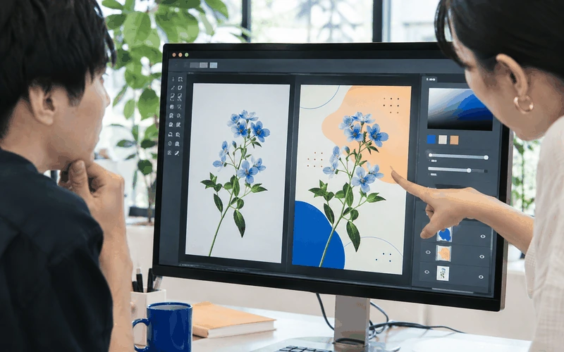
素材の生成・背景除去・レタッチ。商用利用の注意点と、生成画像の自然な馴染ませ方を学びます。
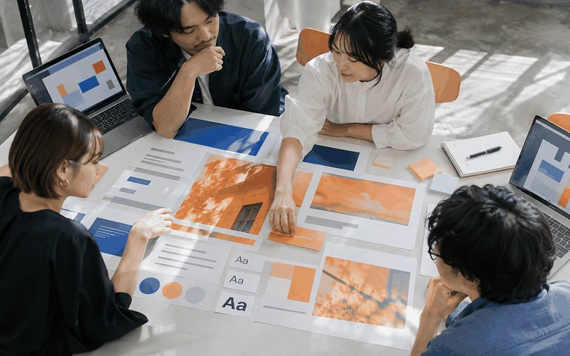
良いデザインを要素に分解し、自分の課題に転用する方法。AIに分析させる手順も身につけます。
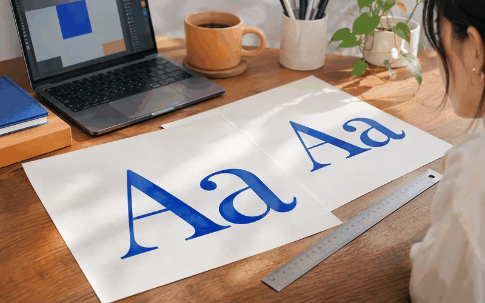
「なんとなく素人っぽい」を抜け出す整え方。AIでは決めきれない細部を自分の手で仕上げます。
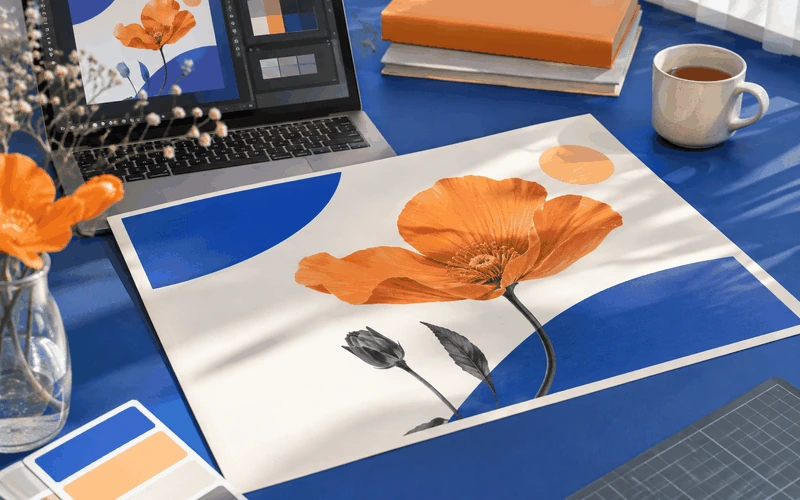
架空の依頼書からヒアリング→ラフ→制作まで。実務と同じ流れで1本作り切ります。
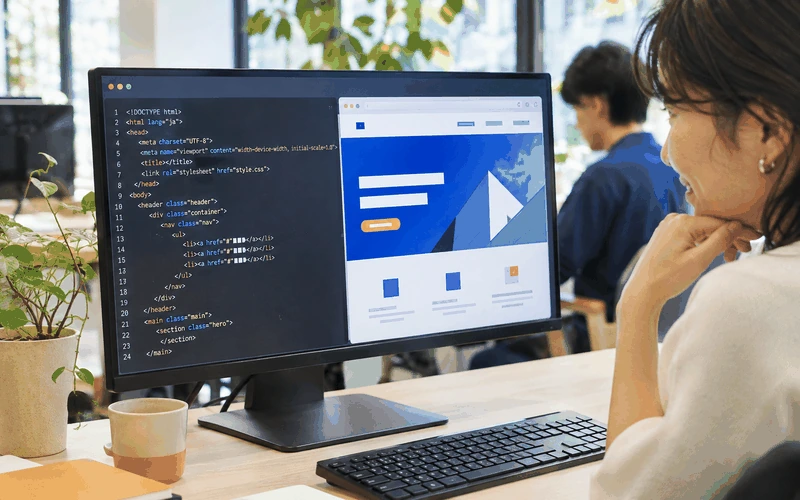
コードを書くのではなく「読んで直せる」ことを目標に。AIが書いたコードの確認ポイントを学びます。
構成の型・CTAの置き方・スマホ対応。デザインカンプからAIでコード化し、公開まで通します。
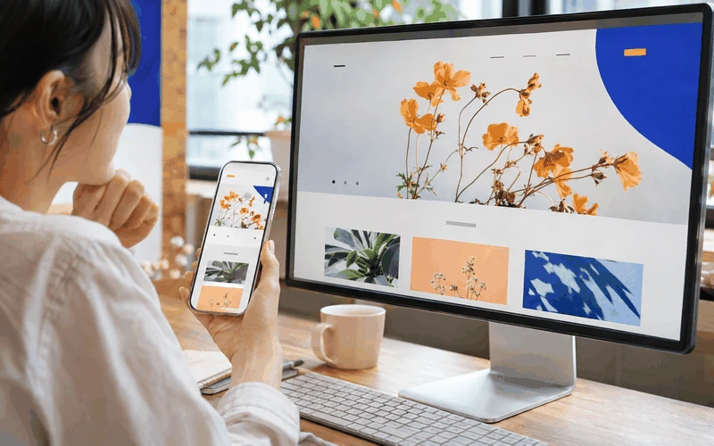
企画からデザイン・公開までを1人で完走。ポートフォリオの核になる作品を仕上げます。
たった45日で
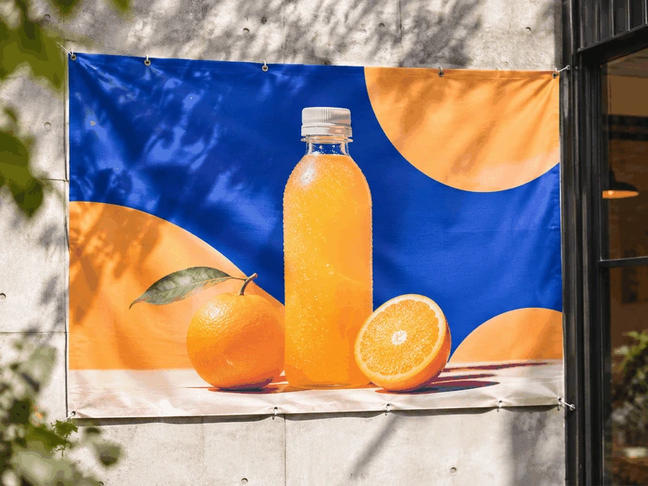
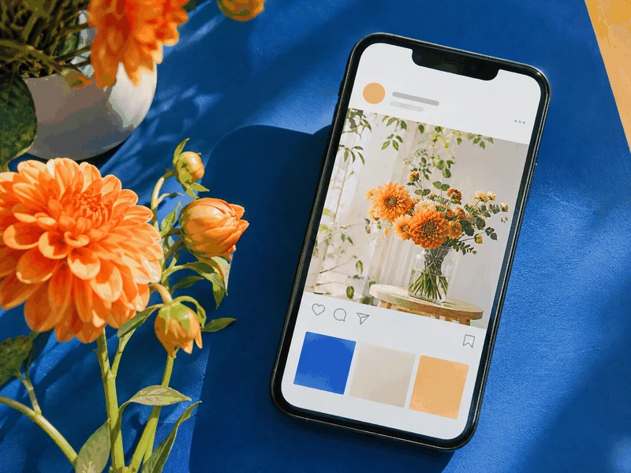
※掲載作品はポートフォリオ用のサンプルです。
まずは、無料セミナーで雰囲気を知る。
事務のまま→在宅でバナー制作の副業
パソコンは表計算くらいしか触ったことがなく不安でしたが、AIにたたき台を出してもらえるので「真っ白な画面」で固まることがありませんでした。
デザイン経験ゼロ→卒業制作をポートフォリオに
チーム制度のおかげで続けられました。自分より先に進んでいる人の添削を見るのが、いちばんの勉強になった気がします。
コードが怖い→AIと一緒ならLPが作れる
プログラミングで一度挫折した経験があります。「読んで直せればいい」という考え方に切り替わってから、急に楽しくなりました。
平日は時間がない→週末だけで45日を完走
動画が短いので、休憩時間にも見られました。添削が丁寧で、何を直せば良くなるのかが毎回はっきり分かります。
外注に頼っていた→SNS画像を自分で制作
画像生成の権利まわりをきちんと教えてもらえたのが安心でした。社内で「それどうやって作ったの？」と聞かれるようになりました。
自信がなかった→知人のお店のチラシを制作
「センスがない」と思い込んでいましたが、参考デザインを分解する回で考え方が変わりました。まず小さな依頼から始めています。
※受講生の声は架空のサンプルです。
依頼から初稿までが早く、AIで複数案を出してもらえたので社内の意思決定もスムーズでした。
配色や余白の根拠を説明できる方で、修正のやり取りが少なく済みました。継続してお願いしています。
短納期のキャンペーンでしたが、素材生成を含めてスムーズに納品。品質にも満足しています。
※企業名・コメントは架空のサンプルです。
制作会社でLP・バナーを多数制作後、独立。生成AIを制作フローに組み込む方法を教えています。
EC・美容系のデザインが得意。添削では「なぜ良くなるか」を言葉にして伝えます。
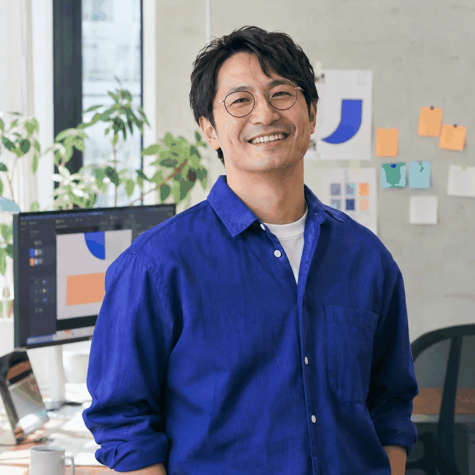
AIが書いたコードの読み方・直し方を担当。「書けなくても公開できる」を実現します。
※講師はダミーです。掲載講師が担当になることを保証するものではありません。
クリエアイはここが違う！
| 比較項目 | 独学 | 一般的な スクール | クリエアイ |
|---|---|---|---|
| 学習期間 | 自分のペース | コースによる | 最短45日 |
| AI活用 | 自分で選ぶ | コースによる | 全レッスンで前提 |
| 講師 | 教材を選ぶ | スクールによる | 現役デザイナー |
| 添削 | 自分で機会を探す | コースによる | 回数無制限 |
| コーディング | 自分で学ぶ | コースによる | AIで読んで直す |
| 交流 | 自分で機会を探す | スクールによる | チーム制度 |
| キャリア相談 | 自分で機会を探す | スクールによる | 卒業後も無期限 |
| 受講料 | 教材・ツールによる | コースによる | 月々29,800円〜 |
※学び方の比較イメージです。一般的なスクールの内容は提供元・コースにより異なります。クリエアイは架空の設定です。受講料はモニター受講・12回分割の場合。
オンラインで約90分。AI×Webデザインの仕事と学び方を解説します。
目指す働き方と学習時間をヒアリング。無理のない受講プランを一緒に決めます。
受講開始日から45日間のカリキュラムがスタート。初日からAIを使います。
参加者の多くが「もっと知りたい」と
はい。セミナー参加後に入学を強制することはありません。特典もセミナー参加者全員にお渡しします。
すべてオンラインで完結するため、インターネット環境があればどこからでも受講できます。添削・面談も時差を考慮して調整します。
動画は1本10分前後、課題も分割して提出できます。受講生の多くが隙間時間で学習しています。
年齢による制限はありません。AIにたたき台を任せられるため、経験の差が出にくい学び方です。
Lesson 01でツールとAIの基本操作から始めます。チャットサポートで操作の質問もできます。
無料プランで始められるツールを中心に構成しています。必要に応じて有料プランの使いどころも解説します。
3回・6回・12回の分割に対応しています（架空の設定です）。
卒業生コミュニティ、ポートフォリオ添削、案件紹介を期限なくご利用いただけます。採用・受注を保証するものではありません。
一般受講
月々34,800円（税込）
※12回分割払いの場合。一括 398,000円（税込）
モニター受講 おすすめ
月々29,800円（税込）
※12回分割払いの場合。一括 338,000円（税込）
※受講の感想・作品の紹介にご協力いただける方が対象です。
※料金はポートフォリオ用の架空の設定です。お申し込みはできません。
学び始める前に、費用と時間の見通しを。